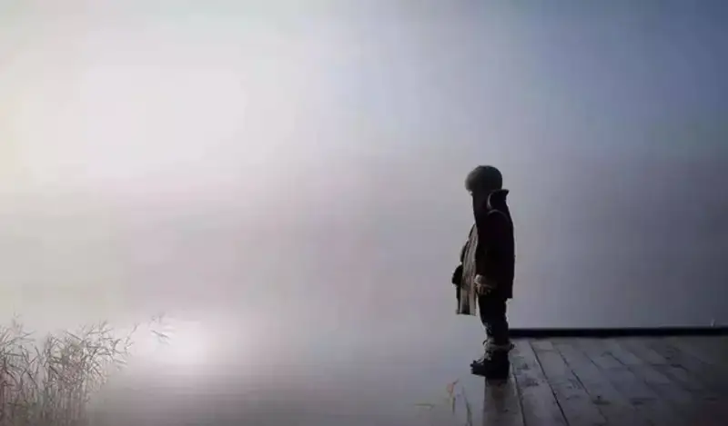
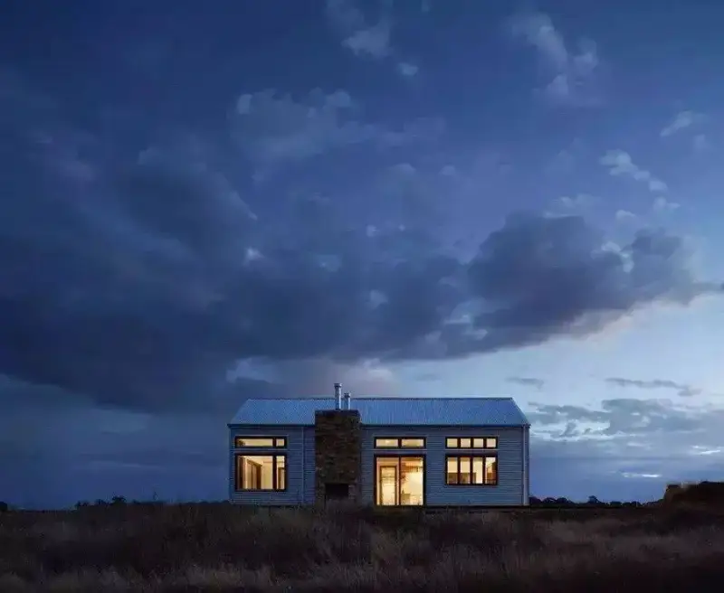

Composition is a required lesson for every photographer. Below we share several ideas and techniques to improve your composition. Read them if you are interested.
1. Simplify the scene
New photographers often make one mistake. They are too greedy and try to capture everything in front of them. Capturing all the elements can be a good record, but it often leaves your photo without a clear subject. The frame becomes too busy, and the story behind it is lost.
Instead, try to make the scene as simple as possible. Shoot only what is truly interesting, and cut the extra or unrelated elements. You will find that the subject stands out more.
2. Fill the frame
If there are many unrelated objects or empty areas around the edges, the subject does not stand out. Try to fill the frame. Use your zoom, or take a few steps closer, so the photo feels fuller.

3. Use different photo ratios
A horizontal frame is easy when you hold the camera. But every photo in a horizontal frame can feel dull. A vertical frame often gives a beautiful result, and it can make the subject stand out more. If you do not know which to use, try both.

4. Do not always place the subject in the center
Many beginners put the subject right in the middle of the photo. This can make the picture feel plain. Use the rule of thirds or the golden ratio. Place the subject at one of the four intersection points. The photo will look better.
Also, do not always place the subject exactly on the one-third line. Keep the balance of the frame in mind when you use the rule of thirds.

5. Use leading lines
A photo without careful composition often lacks a focus. The viewer does not know where to look. To fix this, look for a good leading line. A leading line guides the viewer eye to the subject.
A leading line does not have to be a real line. It can be a row of street lights or a few stones. Find an angle that connects these separate objects. Real lines such as roads and railings are also worth using.

6. Use diagonals
Diagonals are another common composition tool. Horizontal and vertical lines mainly show a sense of stability. Diagonals are well suited to show a sense of motion.

7. Leave space for moving subjects
When people see an object, they often imagine what it will do in the next second. So when you shoot a moving object, whether it really moves or only seems to move, leave some space in the direction it moves. The photo will feel more balanced.
8. Blur the background to isolate the subject
Every photographer should know this method. Use a shallow depth of field to separate the subject from a messy or complex background. It works for portraits, and also for still life, landscape details, and architecture.

9. Use color contrast
Contrast is one of the easiest and most important composition tools. Beginners can start with color contrast. Just find opposing color pairs to shoot, such as yellow and blue, or red and green. You can place the two colors side by side. You can also use one color inside the other, such as a single red leaf in a green bush.

10. Do not lock yourself into theory
Composition theory is only a start. When you actually shoot, try something bold. If the shot can tell the story behind the photo, an unusual composition can make it stronger.

Photography values new ideas. But for new photographers, it is still necessary to learn the basic ideas and methods of composition. The tips above are worth studying carefully.